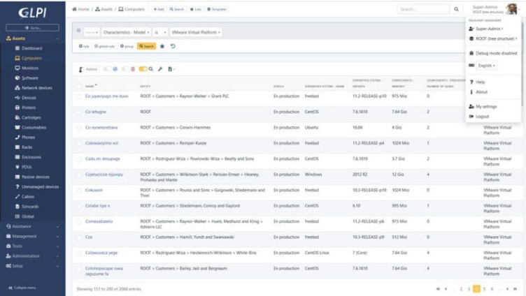
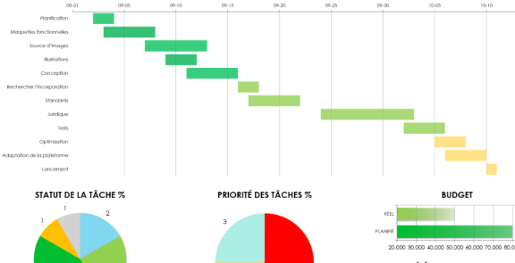

Adrien Martel
Je suis étudiant
A Propos de moi
Etudiant en BTS SIO Alternance
Je m'appelle Adrien Martel, je fais actuellement un BTS SIO à l'institut supérieur Saint Denis en alternance dans l'entreprise Gallo&Associées.
Le BTS option SISR va me permettre d'acquérir des compétences dans trois domaines d'activité :
Le support et la mise à disposition de services informatiques, l'administration des systèmes et des réseaux et la cybersécurité des services informatiques.
Le BTS SIO propose aussi une option SLAM qui va permettre d'acquérir des compétences dans le developpement.
A la suite de ce BTS je souhaiterai faire une lincence professionnelle pour poursuivre mes études.
- Date de naissance: 26 juin 2006
- Téléphone: 06 87 22 47 06
- Ville: St romain d'ay, France
- Age: 19 ans
- Diplome: Bac Pro SN
- Email: adrienmart07@gmail.com
Compétences du BTS SIO
Les 6 compétences du BTS SIO
1. Gestion de parc informatique
Définition : Identifier, inventorier et gérer l'ensemble des ressources matérielles et logicielles d'une organisation informatique.
Mise en œuvre en entreprise:
- Gestion du parc des imprimantes avec GLPI et FusionInventory
- Inventaire et suivi des équipements informatiques

2. Répondre aux incidents et aux demandes d'assistances
Définition : Intervenir rapidement pour résoudre les problèmes techniques et fournir un support utilisateur efficace.
Mise en œuvre en entreprise:
- Résolution des tickets d'incidents via GLPI
- Support téléphonique et assistance utilisateurs
3. Développer la présence en ligne de l'organisation
Définition : Créer et maintenir une présence numérique efficace pour l'organisation sur internet et les réseaux.
Mise en œuvre en entreprise:
- Développement d'un portfolio professionnel en ligne (HTML, CSS, JavaScript)
4. Travailler en mode projet
Définition : Planifier, organiser et coordonner les activités d'un projet informatique en respectant les délais et les objectifs.
Mise en œuvre en entreprise:
- Gestion d'un projet pour developper un logiciel web pour les cabinets Italien de l'entreprise
- Gestion d'un projet pour déployer un serveur de fichier Samba pour l'entreprise

5. Mettre à disposition des utilisateurs un service informatique
Définition : Installer, configurer et maintenir les services informatiques disponibles pour les utilisateurs finaux.
Mise en œuvre en entreprise:
- Deployement d'une solution de blocage d'application pour les utilisateurs (Applocker)
- Administration et maintenance des services pour les utilisateurs
6. Organiser son développement professionnel
Définition : Planifier sa formation continue et progresser dans ses compétences pour évoluer professionnellement.
Mise en œuvre en entreprise:
- Suivi de formations complémentaires et certifications
- Veille technologique sur les nouveautés informatiques (LLM, IA)
Compétences
Mes Compétences acquis durant mes expériences
Mon expérience
Résumé
Martel Adrien
BTS SIO Alternance
- 1295 route du port de Roure, 07290 ST ROMAIN D’AY
- 06 87 22 47 06
- adrienmart07@gmail.com
Formations
BTS SIO
2024 - 2026
Institut Supérieure Saint denis - Annonay (07)
Bac Pro Systèmes Numérique
2021 - 2024
Lycée professionnel Marc Seguin – Annonay (07)
Expériences professionnelles
Alternace - Gallo & Associés
2024 - Present
Annonay(07)
- Stage de 4 semaines
- Support Utilisateur
- Gestion de parc à l'aide de GLPI
- Gestion de serveur
Stage - XPO Logistique
Novembre 2023
St Rambert d'Albon(26)
- Apprentissage du logiciel SCCM pour deployer des mises a jours et des logiciels sur certain postes à distances
- Vu des connaissanses de base sur exel
- Support Utlisateur
Gallo&Associées
Gallo&Associées est une entreprise qui propose leur services dans le milieu :
Sites
Collaborateurs
Mes Projets
Découvrez mes réalisations professionnelles et scolaires

Veille techno
Les Large Language Models (LLM) sont des modèles d’IA basés sur des réseaux de neurones de type transformeur, entraînés sur d’énormes volumes de textes pour comprendre et générer du langage naturel.
Ils sont aujourd’hui au cœur des assistants conversationnels, de la génération de code, du résumé automatisé et de la traduction, avec des milliards de paramètres. Les modèles d'aujourdhui se distinguent par de meilleures capacités de raisonnement, des contextes plus longs et une spécialisation par domaine (Chatgpt, gemini, antropics).
Ce sujet est pertinent en veille techno car les LLM transforment déjà profondément les pratiques de développement, d’administration système et d’automatisation dans l’IT. Suivre ces évolutions permet d’anticiper les impacts sur la productivité, la sécurité et les nouveaux usages possibles (génération de scripts, aide au debugging, documentation).
Enfin, les LLM posent aussi des enjeux de gouvernance des données et de coûts, ce qui en fait un thème stratégique à surveiller pour concevoir des solutions robustes et responsables.
J'ai choisi ce sujet car je le trouve très intéressant, il est toujours en constante évolution et il évolue très rapidement.